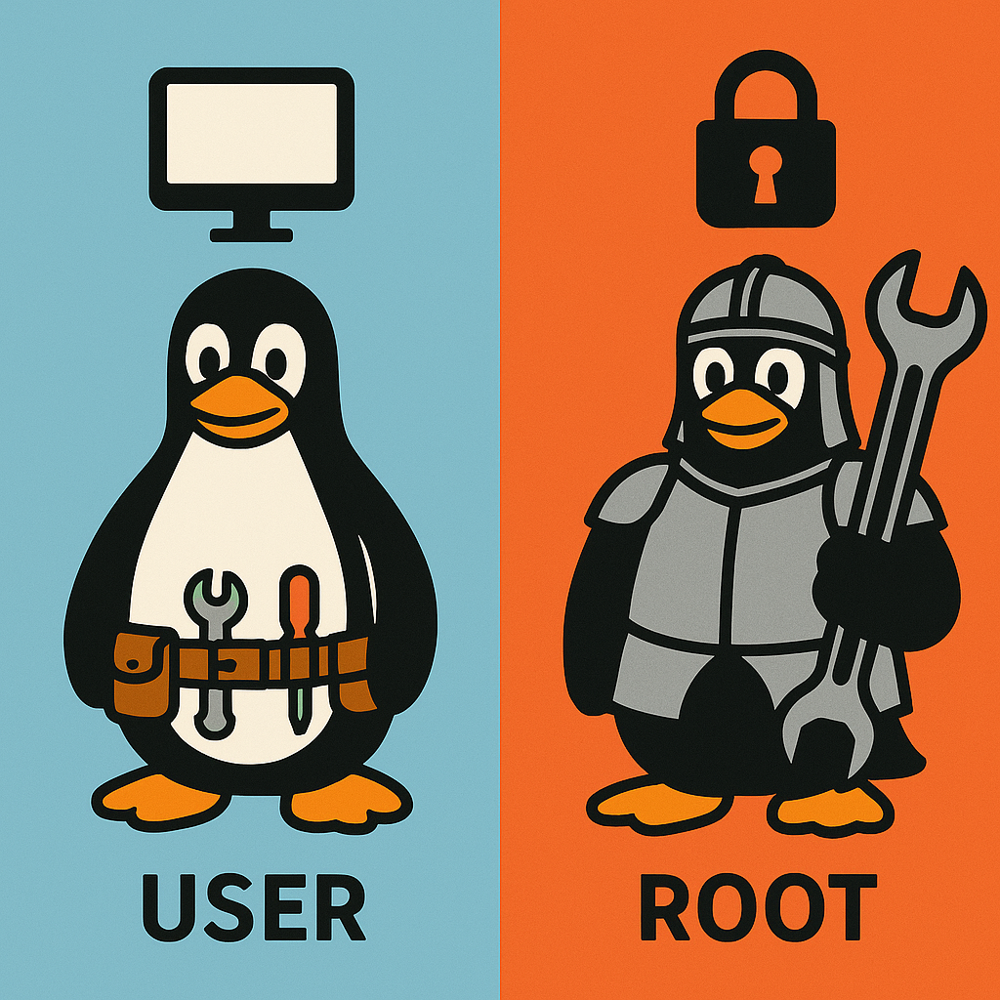

We believe security software like Kicksecure needs to remain Open Source and independent. Would you help sustain and grow the project? Learn more about our 14 year success story and maybe DONATE!
Avoid nonfreedom softwareDocumentationsysmaintPrevious page: Avoid nonfreedom softwareIndex page: DocumentationNext page: sysmaintSafely Use Root Commands
- Default Passwords
- Passwords
- Account Management
- Login
- Login Spoofing
- Safely Use Root Commands
sysmaintAccount- System Maintenance Panel
- Unrestricted Admin Mode
- Protection against Physical Attacks
- User Account Isolation (developers)
user-sysmaint-split (developers)- Polkit (formerly PolicyKit) /
pkexec - privleap /
leaprun

This page gives tips on using sudo / root
(privileged) commands safely. The root account is a special
user account in Unix-based operating systems that has complete access to
all files and commands on a system. It is typically used only for system
administration tasks that require unrestricted access.
Introduction
Learn why 'root' is important, what it is used for, and
how to use sudo / root (privileged) commands
safely.
Rationale for Protecting the Root Account
What is the point on a typical single user Linux desktop computer of
separating privileged administrator account (called root
account) and limited user accounts (such as for example account
user)?
It is assumed that most desktop computer users are single user
computers. I.e. computers being used by only one person. Rather it is
assumed that most users are only using a single login user account which
will be referred to as account user.
Quote xkcd authorization:
If someone steals my laptop while I'm logged in, they can read my email, take my money, and impersonate me to my friends, but at least they can't install drivers without my permission.
Quote user discussion:
Most people will consider their home directory as more important than root dirs
Once a malicious program has access to my home folder, I don't care if it also has access to the admin content
This is true for most users using single user computers, using only one user account and no virtual machines. As a counter measure this is why this documentation recommends compartmentalization, that is, running different activities in different virtual machines or even on different hardware.
The rationale of prevention of root compromise
has the following goals: [1]
- Protect the host operating system: If using virtual
machines (VM): It is much less likely that malware will break out
of a virtual machine if it does not have
rootaccess within the VM. [2] This is becauserootcan change kernel settings (to wide. attack surface), load kernel modules. This is also called VM escape. - Protection from rootkits: Root access allow malware to
install
rootkits, which can be very difficult to detect and remove. - Protect the virtualizer: It is harder to attack the
virtualizer without
root/ kernel access. (Applies only when using virtual machines.) - Protect the hardware: A compromised host operating system
might result in malware infecting the hardware, i.e. malware could install a persistent hardware backdoor
(such as in BIOS or other firmware trojan) surviving even re-installation of
the host operating system. In many cases,
rootaccess is required before hardware can be attacked. [3] - Protect against compromised non-root users: it is harder for
potentially compromised non-root users (such as
www-data) to access accountuseror other parts of the system. This is important when considering that even single-user systems have many system-level user accounts. - Sandboxing: Sandboxing applications can prevent applications
getting exploited by attackers [4] or limit the severity
of the exploit since if sandboxing is successfully, malware will be
trapped inside the sandbox. Sandboxing is a lot harder, less efficient
or even impossible when applications are running as
root. See also AppArmor,apparmor.d(Full System AppArmor Profile) and sandbox-app-launcher.
Kicksecure implements various security hardening to Enforce Strong Linux User Account Isolation.
user-sysmaint-split (Multiple Boot Modes
for Better Security) can provide strong guidance for users to better
separate their limited (everyday use) account (user) from
their administrative account (sysmaint). This results in
robust Prevent Malware from Sniffing the Root
Password.
Security and Best Practices
General Security Advice
Commands that require root permissions should be run
individually using sudo. In all cases:
- Do not login as
root. - Do not run
sudo su.
Inappropriate Use of Root Rights
Do not think of root as a shortcut to fix issues.
 It is very much discouraged to establish the following behavior:
It is very much discouraged to establish the following behavior:
application problem → "try sudo /
root".
Only use privilege escalation tools such as sudo,
lxsudo or the accounts sysmaint /
root if there is a strong rationale for doing so.
Otherwise...
Inappropriate Use of root Rights:
- Can cause additional non-security related issues. [5]
Related is also later chapter Graphical Applications with
RootRights. - Risks harmful code being run as
root.
Default Passwords
The default passwords for Kicksecure are:

- Default username: user
- Default password: No password required. (Passwordless login.) [6]
The default root account is locked (or should be
locked). [7] This is a purposeful security feature -- see
below for further details.
Users can change or set a password for security reasons if this is useful in their case based on this Information.
User Password versus Root Password
Tools such as sudo and lxsudo prompt for
the password of the user account. This is different from
the root account password.
Run with Administrative Rights
Command Line Applications with Root Rights
To run a command line interface (CLI)
application with administrative ("root") rights.
1 Sysmaint Notice

- A
If using
user-sysmaint-split: The user must boot into the sysmaint session. For details and instructions on how to do so, see user-sysmaint-split. - B If using unrestricted admin mode: This sysmaint notice does not apply. Continue with the steps below.
2
Use a privilege elevation utility to run commands as
root.
Note: Replace command with the actual
command.
- command line interface (CLI): sudo command
- graphical user interface (GUI): See Graphical Applications with
RootRights.
3 Password entry.
If a password has been configured, the utility will prompt for it.
4 Done.
5 Test command.
Run a test command with administrative ("root")
rights.
This is only a simple test to confirm that the user can currently escalate to administrative rights. [8] Type the following command in the terminal and press .
sudo whoami
Expected output.
rootGraphical Applications and Root Rights
Miscellaneous Applications with Root Rights
1 Notices
- General rule: Do not run graphical user
interface (GUI) applications with
sudo! - Discouraged practice: Avoid running graphical user
interface (GUI) applications using
sudo gui-application. - Never log in as
root: As explained above, logging in directly asrootis not advised. - Avoid
sudo sufor GUI apps: Do not usesudo sufollowed by launching GUI applications. - Reason: This would constitute an Inappropriate
Use of
RootRights, inherited from Debian, and is likely to fail with error messages as noted in the footnotes. [9] - command line interface (CLI) applications: See Command Line Applications with Root Rights.
- File editors: See Editing Files with Root Rights.
2 Open GUI application with root rights. [10]
Select your platform.
Kicksecure
3 Select the application type.
You can try gsudo-wl first and try gsudo-x
if needed.
gsudo-wl
4
The following command should work to run Wayland applications as
root in most instances.
- Syntax: Use the following command.
- Note: Replace
application-namewith the actual name of the application. [11]
gsudo-wl application-name
- Example: The following command starts
gparted.
gsudo-wl gparted
gsudo-x
4
Some Qt based applications may try to use X11 by default, in which case
gsudo-wl will fail. To override this and make Qt attempt to
use Wayland instead.
- Syntax: Use the following command.
- Note: Replace
application-namewith the actual name of the application. [12]
gsudo-x application-name
- Example: The following command starts
gparted.
gsudo-x gparted
Kicksecure for Qubes
- Note: Kicksecure-Qubes only. [13]
- Syntax: Use the following command.
- Note: Replace
application-namewith the actual name of the application.
lxsudo application-name
- Example: The following command starts
baobab.
lxsudo baobab
Polkit PolicyKit pkexec for GUI applications
Use of polkit (formerly
PolicyKit) (pkexec) might also be appropriate for running
GUI applications with root rights. Usually such applications should have
desktop shortcuts or wrappers which make use of pkexec.
There are no (or rare) known cases where users need to run
pkexec on the command line.
Editing Files with Root Rights
To edit files which can only be edited with root
rights. Use the following syntax.
Note: Replace /path/to/file/name with the actual
path to the file.
Open file /path/to/file/name in an editor with
administrative ("root")
rights.
1 Select your platform.
2 Notes.
- Sudoedit guidance: See Open File
with Root Rights for details on why using
sudoeditimproves security and how to use it. - Editor requirement: Close Featherpad (or the chosen text
editor) before running the
sudoeditcommand.
3 Open the file with root rights.
sudoedit /path/to/file/name
2 Notes.
- Sudoedit guidance: See Open File
with Root Rights for details on why using
sudoeditimproves security and how to use it. - Editor requirement: Close Featherpad (or the chosen text
editor) before running the
sudoeditcommand. - Template requirement: When using Kicksecure-Qubes, this must be done inside the Template.
3 Open the file with root rights.
sudoedit /path/to/file/name
4 Notes.
- Shut down Template: After applying this change, shut down the Template.
- Restart App Qubes: All App Qubes based on the Template need to be restarted if they were already running.
- Qubes persistence: See also Qubes Persistence
- General procedure: This is a general procedure required for Qubes and is unspecific to Kicksecure-Qubes.
2 Notes.
- Example only: This is just an example. Other tools could achieve the same goal.
- Troubleshooting and alternatives: If this example does not work for you, or if you are not using Kicksecure, please refer to Open File with Root Rights.
3 Open the file with root rights.
sudoedit /path/to/file/name
For example:
Open file /etc/default/keyboard in an editor with
administrative ("root")
rights.
1 Select your platform.
2 Notes.
- Sudoedit guidance: See Open File
with Root Rights for details on why using
sudoeditimproves security and how to use it. - Editor requirement: Close Featherpad (or the chosen text
editor) before running the
sudoeditcommand.
3 Open the file with root rights.
sudoedit /etc/default/keyboard
2 Notes.
- Sudoedit guidance: See Open File
with Root Rights for details on why using
sudoeditimproves security and how to use it. - Editor requirement: Close Featherpad (or the chosen text
editor) before running the
sudoeditcommand. - Template requirement: When using Kicksecure-Qubes, this must be done inside the Template.
3 Open the file with root rights.
sudoedit /etc/default/keyboard
4 Notes.
- Shut down Template: After applying this change, shut down the Template.
- Restart App Qubes: All App Qubes based on the Template need to be restarted if they were already running.
- Qubes persistence: See also Qubes Persistence
- General procedure: This is a general procedure required for Qubes and is unspecific to Kicksecure-Qubes.
2 Notes.
- Example only: This is just an example. Other tools could achieve the same goal.
- Troubleshooting and alternatives: If this example does not work for you, or if you are not using Kicksecure, please refer to Open File with Root Rights.
3 Open the file with root rights.
sudoedit /etc/default/keyboard
Root Account Management
Default Setting
- Root account locked: For security reasons, the
rootaccount has been configured into the state of "locked" for login by default in Kicksecure. [15] - Definition complexity: The definition and
repercussions of a "locked" Linux user account, however, are complicated
for all Linux distributions. For technical details on what this means
exactly, advanced users can refer to the wiki chapter
RootAccount Locked and Meanings of Special Characters in the Password Field of /etc/shadow File. - No
rootusage needed: Most users should not need to use therootaccount.
Avoid Root Login
Should the user log in as root? No. See footnote for
rationale. [16]
Note: Kicksecure
is an Implementation of the Securing Debian Manual.
Specifically the feature you're reading about here is inspired by this
chapter in the manual: Using
su
Enable Root Account
If the user wants to enable the root account, run the
following commands.
1 Sysmaint Notice

- A
If using
user-sysmaint-split: The user must boot into the sysmaint session. For details and instructions on how to do so, see user-sysmaint-split. - B If using unrestricted admin mode: This sysmaint notice does not apply. Continue with the steps below.
2 Platform-specific notice.
- Kicksecure: No special notice.
- Kicksecure-Qubes: Inside
kicksecure-18Template.
3
Choose sudo availability.
sudo available
If you can use
sudo, follow the instructions below.sudo unavailable
If you cannot use sudo:
- Kicksecure: Boot into recovery mode.
- Kicksecure-Qubes: Open a Qubes
RootConsole.
4
Set a root password.
See configuring passwords for detailed information on changing user account passwords.
Note: These instructions apply to the user
account. Replace user with root.
[17]
5 Done.
The root account has been unlocked.
Disable Root Account
Applicability:
- Earlier versions: Kicksecure (versions
lower than
15.0.0.3.6) came with therootaccount enabled by default. - Distro-morphing: Users who installed Kicksecure inside Debian using the installation method described in the User Account Information section.
Most users should disable the root account by running
the following commands.
1 Sysmaint Notice

- A
If using
user-sysmaint-split: The user must boot into the sysmaint session. For details and instructions on how to do so, see user-sysmaint-split. - B If using unrestricted admin mode: This sysmaint notice does not apply. Continue with the steps below.
2 Platform-specific notice.
- Kicksecure: No special notice.
- Kicksecure-Qubes: Inside
kicksecure-18Template.
3
Lock the root account.
sudo passwd --lock root
4 Done.
The root account has been locked.
In the future, use sudo instead when necessary.
Troubleshooting
Permissions Fix
After inappropriate use of root rights,
attempt to fix:
Open a terminal.
Platform specific. Select your platform.
Kicksecure USER Session
If you are using a graphical Kicksecure with LXQt, complete the following steps.
Start menu → System Tools →
QTerminal
Kicksecure SYSMAINT Session
In the System Maintenance Panel, under the
Misc section,
click Open Terminal.Kicksecure-Qubes
If you are using Kicksecure-Qubes, complete the following steps.
Qubes App Launcher (blue/grey "Q") →
Kicksecure App Qube (commonly named kicksecure)
→ QTerminal
Run the following command to reset permissions of account
user's home folder /home/user back to owner
user and group user.
sudo chown --recursive user:user /home/user
Reset User Account Password
The following steps can be used in case the password has been forgotten and needs to be reset.
1
Launch a root terminal.
- Kicksecure: Boot into recovery mode.
- Kicksecure-Qubes: Open a Qubes
RootConsole.
2 Notes.
- This process will be similar to the change password wiki chapter which is recommended to read as it contains instructions / links on how to change and test the keyboard layout.
- This is unspecific to Kicksecure. It should be a very similar process on Debian or most other Linux distributions. It can also be resolved as per Self Support First Policy.
3 Set a new password.
To change the password for account user, run the
following command.
sudo pwchange
4 Reboot.
sudo reboot
5 Done.
The process of password reset has been completed.
Unlock User Account: Excessive Wrong Password Entry Attempts
The following steps can be used in case the user entered the wrong password too many times, which resulted in the user account being automatically locked. (This is related to security feature Bruteforcing Linux User Account Passwords Protection.)
1
Launch a terminal that can run commands as
root.
If you cannot login anymore, see the bullet points below:
Platform specific.
- Kicksecure: Boot into recovery mode.
- Kicksecure-Qubes:
Open a Qubes
RootConsole.
2 Run the following command. [19]
Note: Replace user with the actual name of the
user that you wish to unlock.
sudo faillock --dir /var/lib/security-misc/faillock --user user --reset
3 Done.
Unlocking of user account has been completed.
Console Unlock
1
Launch a root terminal.
- Kicksecure: Boot into recovery mode.
- Kicksecure-Qubes: Open a Qubes
RootConsole.
2 Learn the syntax.
Note: Do not run this command. Only for reference, explanation.
sudo adduser account-name group-name3
Add the account to group Linux user group
console.
Run the following command.
Note: Replace user with the Linux user account
name which should be allowed to login on the login console.
sudo adduser user console
4 Done.
The account has been added to group console.
Advanced Users
Prevent Malware from Sniffing the Root Password
Rationale for Separate sysmaint Account
If Linux user account user is compromised and has
sudo access, malware can easily steal the administrative
("sudo") password. [20] Therefore it is more
secure (rationale) to perform
administrative actions such as running sudo from a separate
sysmaint (System
Maintenance) account that is less likely to get compromised, since
this reduces the chances of malware sniffing the password to escalate to
administrative ("root") access.
The basic concept is a separation of the following accounts:
- Account
user: Perform everyday actions such as running web browsers. - Account
sysmaint: Perform system maintenance administrative actions such as installing additional packages.
Questions and answers:
- Is running applications such as browser under account
sysmaintless secure? Yes, that defeats this concept. - Is running applications such as browser under account
usermore secure? Yes, because it becomes harder for malware to perform privilege escalation attacks to gain administrative ("root") access. - What is so bad about malware escalating to administrative? See rationale.
- Why use account
sysmaintand not simply therootaccount? See avoid root login details.
Overview of Steps
To more securely perform administrative tasks that require
root access, see the following overview steps below.
Detailed technical steps are available further below.
1 Prerequisite knowledge: login spoofing
2 These instructions are ideally applied after installing the host / VM when it is still considered free of malware.
3 Only then perform administrative tasks according to the instructions below.
Detailed Steps
1
Check if user-sysmaint-split is already
installed.
See sysmaint Default Installation Status.
2
Install the user-sysmaint-split package, if
needed.
This is required to create user sysmaint. For
instructions, see user-sysmaint-split Installation.
3
Perform the following steps securely using sudo.
Use one of the methods below.
Power-off and Power-on Cycle Method
- Advantages:
- Recommended: This method is recommended.
- Most secure method: This is the most secure method.
- Disadvantage:
- Session termination: Cannot keep graphical session of
unprivileged account
userrunning. In other words, simplified, all applications running under accountuserwill be terminated.
- Session termination: Cannot keep graphical session of
unprivileged account
1 Power off.
Shutdown the system. Really power off. Not shutdown. Why? To defeat login spoofing.
Note: With Power-off and Power-on Cycle Method you only need to shutdown the current context you're using. Which means,
- If you're using a VM: Shutdown and restart the VM.
- If you're using a host operating system: Shutdown, power-off and power on the computer.
2 Power on.
3 See Usage.
4 Perform any necessary administrative tasks.
5 Power off.
6 Power on.
7 Done.
Non-GUI Environment Method
- Advantage:
- Session continuity: Can keep current account session(s) and/or graphical session (Wayland) running.
- Disadvantages:
- Status: Unsupported.
- Security: Less secure. (
user-sysmaint-split(developers), Fast User Switching) - Graphical session: Cannot use graphical session during administrative tasks.
- SysRq requirement: Requires SysRq, which is disabled by default in Kicksecure for security reasons.
1 Enable SysRq.
2
Make sure keyboard gets disconnected from the display server (Wayland)
to defeat login spoofing.
(unraw) [21]
SysRq+w
(Press Alt+SysRq+w)
3 Switch to another virtual console.
(Press Alt+Ctrl+F2) [22]
4 Press Secure Access Key also to defeat login spoofing.
SysRq+k
(Press Alt+SysRq+k)
5
Login as account sysmaint from that non-graphical
environment (virtual
console). [23]
6 Perform any necessary administrative tasks.
7
Logout account sysmaint.
logout
8 Switch back to previous virtual console.
Display server runs in:
- Most Linux distributions: virtual console
7(Press Alt+Ctrl+F7) - Qubes: virtual console
1(Press Alt+Ctrl+F1)
9
Re-login if needed and continue usual work as account
user.
10 Done.
Logout Method
- Advantage:
- Session continuity: Can use graphical session (display
server) (Wayland) (formerly X11) during administrative tasks using
privileged account
sysmaint.
- Session continuity: Can use graphical session (display
server) (Wayland) (formerly X11) during administrative tasks using
privileged account
- Disadvantages:
- Status: Unsupported.
- Security: Less secure. (
user-sysmaint-split(developers), Fast User Switching) - Session termination: Cannot keep graphical session of
unprivileged account
userrunning. In other words, simplified, all applications running under accountuserwill be terminated. [24] - SysRq requirement: Requires SysRq, which is disabled by default in Kicksecure for security reasons.
1 Enable SysRq.
2 Terminate all running applications in current graphical (X) session.
3 Log out.
Start Menu -> Log Out
4
Make sure keyboard gets disconnected from the display server to defeat login spoofing.
(unraw) [21]
SysRq+w
(Press Alt+SysRq+w)
5 Press Secure Access Key also to defeat login spoofing.
SysRq+k
(Press Alt+SysRq+k)
6
Login as account sysmaint.
7 Perform any necessary administrative tasks.
8
Logout account sysmaint.
9
Re-login as account user.
10
Continue usual work as account user.
11 Done.
Substitute User (su) Command
The majority of users do not need to utilize the su
command. [25].
In Kicksecure, by default:

github-link-widget-no-url-given. [26]- Account
useris a member of groupsudo. (This might change in a later release.)
To permit the su command from account user,
complete the following steps.
(Kicksecure-Qubes: perform these steps in Kicksecure Template.)
2
Add account user to group
root.
sudo adduser user root
Set suid. Note: It is okay if the second command
fails.
sudo permission-hardener disable /bin/su sudo permission-hardener disable /usr/bin/su
sudo mkdir -p /etc/permission-hardener.d
Open file /etc/permission-hardener.d/20_user.conf in an
editor with administrative ("root") rights.
1 Select your platform.
2 Notes.
- Sudoedit guidance: See Open File
with Root Rights for details on why using
sudoeditimproves security and how to use it. - Editor requirement: Close Featherpad (or the chosen text
editor) before running the
sudoeditcommand.
3 Open the file with root rights.
sudoedit /etc/permission-hardener.d/20_user.conf
2 Notes.
- Sudoedit guidance: See Open File
with Root Rights for details on why using
sudoeditimproves security and how to use it. - Editor requirement: Close Featherpad (or the chosen text
editor) before running the
sudoeditcommand. - Template requirement: When using Kicksecure-Qubes, this must be done inside the Template.
3 Open the file with root rights.
sudoedit /etc/permission-hardener.d/20_user.conf
4 Notes.
- Shut down Template: After applying this change, shut down the Template.
- Restart App Qubes: All App Qubes based on the Template need to be restarted if they were already running.
- Qubes persistence: See also Qubes Persistence
- General procedure: This is a general procedure required for Qubes and is unspecific to Kicksecure-Qubes.
2 Notes.
- Example only: This is just an example. Other tools could achieve the same goal.
- Troubleshooting and alternatives: If this example does not work for you, or if you are not using Kicksecure, please refer to Open File with Root Rights.
3 Open the file with root rights.
sudoedit /etc/permission-hardener.d/20_user.conf
Add.
/bin/su exactwhitelist /usr/bin/su exactwhitelist
5 Save.
6 Done.
Steps to permit su command from account
user are complete.
Root Login
Root login within a virtual console will be disabled by default after
upgrades. [28] [29]
To enable login from a virtual console, first apply the Enable Root
Account instructions further above, then complete the steps
below.
1
'''To allow root login, /etc/securetty must be
configured. [30]
Open file $(realpath /etc/securetty) in an editor with
administrative ("root")
rights.
1 Select your platform.
2 Notes.
- Sudoedit guidance: See Open File
with Root Rights for details on why using
sudoeditimproves security and how to use it. - Editor requirement: Close Featherpad (or the chosen text
editor) before running the
sudoeditcommand.
3 Open the file with root rights.
sudoedit $(realpath /etc/securetty)
2 Notes.
- Sudoedit guidance: See Open File
with Root Rights for details on why using
sudoeditimproves security and how to use it. - Editor requirement: Close Featherpad (or the chosen text
editor) before running the
sudoeditcommand. - Template requirement: When using Kicksecure-Qubes, this must be done inside the Template.
3 Open the file with root rights.
sudoedit $(realpath /etc/securetty)
4 Notes.
- Shut down Template: After applying this change, shut down the Template.
- Restart App Qubes: All App Qubes based on the Template need to be restarted if they were already running.
- Qubes persistence: See also Qubes Persistence
- General procedure: This is a general procedure required for Qubes and is unspecific to Kicksecure-Qubes.
2 Notes.
- Example only: This is just an example. Other tools could achieve the same goal.
- Troubleshooting and alternatives: If this example does not work for you, or if you are not using Kicksecure, please refer to Open File with Root Rights.
3 Open the file with root rights.
sudoedit $(realpath /etc/securetty)
2 Add the following content.
Note: Add one or more tty depending on your circumstances; see
file /etc/securetty.security-misc-orig.
tty1 tty2 tty3 tty4 tty5 tty6 tty7 tty8 tty9 tty10
hvc0
3 Save the file.
Recovery Mode
Root login is possible using recovery mode. [31]
When the root account is disabled, passwordless
root login using recovery mode is possible; see below for
the security impact.
Passwordless Recovery Mode Security Discussion
This is only relevant on the host and not inside virtual machines.
Passwordless recovery mode is allowed because a locked
root password would break the rescue and emergency shell.
Therefore the security-misc
package enables a passwordless rescue and emergency shell. This is the
same solution that Debian will likely adapt for Debian installer.
[32]
To prevent adverse security effects posed by lesser adversaries with physical access to the machine, set up BIOS password protection, bootloader grub password protection and/or full disk encryption.
See also: Recovery Mode
Qubes Root Console
The following will open a root console inside a Qubes
VM.
Choose an option.
Right click qube and Open console in qube
Using qvm-console-dispvm
Using qvm-console-dispvm might be more secure than
qvm-run. [33]
1
Open a dom0 terminal.
Qubes App Launcher (blue/grey "Q") →
System Tools → QTerminal
2 Run the following command. [34]
Note: Replace vm-name with the name of the actual
VM where you want to open a root console.
qvm-console-dispvm vm-name
3 Done.
A Qubes root console will now be available.
Using qvm-run
1
Open a dom0 terminal.
Qubes App Launcher (blue/grey "Q") →
System Tools → QTerminal
2 Run the following command.
Note: Replace vm-name with the name of the actual
VM where you want to open a root console.
qvm-run -u root vm-name qterminal
3 Done.
A Qubes root console will now be available.
Qubes Passwordless Root Access Setup
(The following can be used to set up passwordless root
access for specific Qubes VMs. [35])
dsudo - default password sudo
dsudo is a Kicksecure specific feature. May be no longer
needed nowadays. [36]
passwordless-root
/usr/bin/passwordless-root
is a tool to easily set up passwordless sudo for account
user.
Execution of passwordless-root requires administrative
("root") rights.
1 Sysmaint Notice

- A
If using
user-sysmaint-split: The user must boot into the sysmaint session. For details and instructions on how to do so, see user-sysmaint-split. - B If using unrestricted admin mode: This sysmaint notice does not apply. Continue with the steps below.
2 Run the passwordless-root command. [37]
sudo passwordless-root
3 Done.
privleap custom actions
Moved to privleap custom actions.
Definitions
Rooted
What does it mean to be "rooted"? The word
"rooted" in the context of computer security, smartphones,
and root isolation is used in different ways.
A device can get "rooted" by at least two different
entities:
- A) user: Intentional
rootingby the user grants them full administrative rights and is typically carried out to overcome restrictions imposed by the manufacturer or operating system (e.g., to uninstall bloatware or customize the OS). - B) malware: Malware-induced
rootingoccurs when malicious software exploits vulnerabilities to gain privileged access without user consent, often for nefarious purposes such as installing malicious programs, gaining deeper access to sensitive data, or ensuring malware persistence.
Linux desktop operating system (Debian, Fedora, Kicksecure, Whonix, and most others) specific example:
- Definition: If
sudois configured to allow accountuserto run commands without a password, the machine can be consideredrootedby the user. - In technical terms: File
/etc/sudoers.d/user-passwordlesscontains contentuser ALL=(ALL:ALL) NOPASSWD:ALL. - Implications: This means the user will be able to
run
sudo some-commandto execute a command with administrative ("root") rights without a password. The user could even runsudo suto log into therootaccount.
Qubes specific example: If package
qubes-core-agent-passwordless-root gets installed, then the
VM has been rooted by the user. The implications are the
same as above. On the other hand, if the user opens a Qubes Root
Console, the VM should not be considered rooted.
Kicksecure specific example:
- A) user session: When using user-sysmaint-split and booting
into a user session, the system should not be considered
rootedbecausesudo/rootaccess is unavailable. - B) Unrestricted Admin Mode: When enabling Unrestricted Admin
Mode, then the system can be considered
rootedby the user. - C) sysmaint session: When the user boots
into sysmaint session, the system should not be considered
rooted. Sysmaint session is a temporary, legitimate admin session, does not break the security model and is not the same as Unrestricted Admin Mode. [38]
Malware specific example: If a web server (such as
nginx running under a limited Linux account user
nginx) gets compromised, the malware could attempt to
root the device (a synonym for saying "root
the operating system"). This is also often called local privilege
escalation (LPE), which refers to exploiting vulnerabilities,
misconfigurations, or using other techniques to escalate permissions
from a regular account to a higher privilege level, typically the
"root" account. In this case, the web server could be
considered rooted by malware.
Android specific example: If the user manages to get an
Android Root Management Tool such as SuperSU, Magisk, or
Superuser by ChainsDD to be functional, then the device is typically
considered "rooted by the user". On the other hand, if a
compromised or malicious app accomplishes LPE, then the device can be
considered "rooted by malware".
Unclear definitions: What if on a Linux desktop distribution,
account user can gain root rights after using
sudo and entering a password? Typically, for Linux desktop
distributions this is not considered "rooted". The word
"rooted" is mostly used on mobile operating systems Android
and iOS.
Difference in Terminology:
- Desktop Linux: The concept of
"
rooting" is not usually applied to traditional Linux desktops. Instead, users elevate privileges withsudo, which is considered a normal administrative function. The term "rooted" implies a fundamental change in the system's security model that is not present when using standard privilege escalation likesudo. - Mobile OS (Android/iOS): "
Rooting" or "jailbreaking" signifies that the device's default restrictions are bypassed, giving the user continuous and unrestricted access to system files and functions.
Malicious
Root Management Tools Malicious Root Management
Tools: Are an Android / iOS specific issue. Some websites say, for
example, that KingRoot for Android is malware. [39] This
issue does not exist for Linux desktop distributions. Tools such as
su, sudo, doas are Open Source,
Freedom Software and generally not considered malware. The existence of
malicious root management tools and other issues
(documented on Mobile Devices Privacy and Security, Administrative
Rights) are among reasons why rooting is often
discouraged for mobile devices. However, a blanket recommendation to
avoid rooting in all cases for all use cases cannot be
deduced from that.
Related:
sudoless
What does "sudoless" mean? Word definition.
Different people have used the term "sudoless" for very different meanings.
- 2015: ivandokov/sudoless:
means passwordless
sudo. The ability of a specific Linux user account name such as "user" to runsudowithout a password. - 2021: How to run Docker commands without sudo on a Synology NAS: A quick guide to enable sudoless docker commands.
- 2022: a Kicksecure user forum post: used "sudoless" as a synonym for "passwordless".
- 2023: TechRebuplic: How to enable Podman sudo-less container management
- 2024: secureblue:
used "sudoless" in context of removal of
sudo,suandpkexec. (Related: Comparison of secureblue with Kicksecure and Development Notes, chapter sudoless.)
The term "sudoless" can therefore be confusing, should either be avoided or clarified when used.
See Also
Development
- Kicksecure code:
github-link-widget-no-url-given. The github link is missing! - https://forums.whonix.org/t/sysrq-magic-sysrq-key/8079/68
- https://forums.whonix.org/t/should-lesser-adversaries-with-physical-access-be-part-of-the-threat-model-of-whonix-whonix-host-kicksecure/7997
Attribution
Note: Kicksecure
is an Implementation of the Securing Debian Manual.
Specifically the feature you're reading about here is inspired by this
chapter in the manual: Using
sudo
Footnotes
- Also see: Permissions.
- https://github.com/QubesOS/qubes-issues/issues/2695#issuecomment-301316132
- For example flash utilities for Linux require
rootaccess. In theory, it's conceivable of software bugs in firmware or hardware resulting in hardware compromise without priorrootcompromise. No such examples happening in the wild were known to the author at time of writing. - An exploit or payload might require a function which is unavailable inside the sandbox.
- * Applications supposed to be run as user but run as
rootmight createrootowned files. These file permissions error can lead to additional issues. * Inter process communications such as with dbus might be broken. - Rationale for Change from Default Password changeme to Empty Default Password
- In new builds of Kicksecure version
15.0.0.3.6. Earlier Kicksecure builds did not lock therootaccount by default and should be locked. - This helps avoid mistakenly attributing issues to running a program
with root rights, when the actual problem lies with
sudoauthentication. - * https://help.ubuntu.com/community/RootSudo#Graphical_sudo * https://www.psychocats.net/ubuntu/graphicalsudo Sample error messages in Non-Qubes, Wayland: Undocumented. Sample error messages in Qubes, X11: zZmwstaticVERBATIMzZ2zZ Qubes: zZmwstaticVERBATIMzZ3zZ
- * Increased difficulty running GUI apps as
root: Running graphical applications withlxsudo,sudo --set-home, orpkexechas become more difficult since non-Qubes Kicksecure transitioned from X11 to Wayland. * Wayland socket requirement: Wayland mandates that applications access$XDG_RUNTIME_DIR/$WAYLAND_SOCKETin order to open GUI windows. See technical explanation * Applies to other desktops: This issue may also occur when using Other Desktop Environments that operate with Wayland. * Primary reason: To avoid breaking the system and ensure reliability. * Not a reason: Security is not the primary concern in this context. * Historical note: AskUbuntu discussion on using sudo with GUI applications * Legacy tools: In the past, tools likegksudoandkdesudowere available.lxsudoemerged as a newer alternative. * Wayland compatibility issue:lxsudois not (yet) compatible with Wayland. * Deprecation of tools: More applications integrate with polkit (formerly PolicyKit). - Uses
sudowith--set-homeoption and passes environment variableXDG_RUNTIME_DIR. - Uses
sudowith--set-homeoption and passes environment variableXDG_RUNTIME_DIRsets environment variableQT_QPA_PLATFORM=wayland. - lxsudo is still functional in Qubes because Qubes upstream ticket Use Wayland instead of X11 to increase performance and improve security #3366 has not been implemented yet at the time of writing.
sudowith-H/--set-homewould also be OK. Syntax: sudo -H application-name Or. sudo --set-home application-name For example to start the partition managergpartedby default withrootrights. sudo -H gparted Or. sudo --set-home gparted- Since version
15.0.0.3.6and above. - avoid_root_login_details
Why not log in as
root? This is due to historical and legacy reasons. Even during the era of X11,rootlogin was discouraged. For strong user isolation, logging into therootaccount should be avoided. In an ideal world, the extrasysmaintuser would be unnecessary, and users could simply rely on therootaccount. Or better yet, all references torootwould be removed and replaced withsysmaint. However, educating and convincing many upstream projects to adopt this approach for the purpose of Dev/Strong Linux User Account Isolation is unrealistic due to organizational constraints, which are elaborated on in the Linux User Experience versus Commercial Operating Systems page. - Unexpire the
rootaccount. sudo chage --expiredate -1 root - The
rootaccount is no longer expired, as this previously broke theaddusercommand. See: https://forums.whonix.org/t/restrict-root-access/7658/59 sudo chage --expiredate 0 root To prevent SSH login, see SSH Login Comparison Table. - Kicksecure configuration file
/etc/security/faillockby package security-misc sets: zZmwstaticVERBATIMzZ5zZ It is therefore necessary to use thefaillockcommand with the--dir /var/lib/security-misc/faillockoption. - Any graphical application can see what is typed in another graphical
application, for any account. Quote
Joanna Rutkowska, security researcher, founder and advisor (formerly
architecture, security, and development) of Qubes OS:
If an application is compromised with an exploit due to a security vulnerability, it can be used as malware by the attacker. Once/if the application is not effectively confined by a mandatory access control (MAC) framework like AppArmor or firejail, it can compromise the user account where it is running and then proceed from there. See also sudo password sniffing for technical details.One application can sniff or inject keystrokes to another one, can take snapshots of the screen occupied by windows belonging to another one, etc.
- This step might be unnecessary. Not researched yet.
- Pressing
Alt+Ctrl+F7
results in
tty2. This is to make these instructions compatible with most Linux distributions as well as Qubes. * Most Linux distributions: Login CLI virtual consoles ontty1(Alt+Ctrl+F1) by default and Wayland (formerly X11) ontty7(Alt+Ctrl+F7). * Qubes: X11 by default runs ontty1. (Alt+Ctrl+F1)tty2(Alt+Ctrl+F2) will be for most users an unused virtual console which can be used for the purpose of this chapter. - A display server running as non-
rootaccount cannot sniff keystrokes of different (non-)rootusers utilizing a different virtual console (tty). - Non-simplified: applications run by account
userin a different virtual console or run through systemd (--systemor--user) services can be left running. suis sometimes incorrectly referred to as the superuser command. It allows:
By comparison,... a change to a login session's owner (i.e., the user who originally created that session by logging on to the system) without the owner having to first log out of that session. Although su can be used to change the ownership of a session to any user, it is most commonly employed to change the ownership from an ordinary user to the
root(i.e., administrative) user, thereby providing access to all parts of and all commands on the computer or system.sudomakes it possible to execute system commands without therootpassword.- Implemented in package security-misc.
- sudo chmod 4755 /bin/su sudo chmod 4755 /usr/bin/su
- security-misc
github-link-widget-no-url-givenis empty by default. - When trying to login as
rootin a virtual console it will reply:
Without previously asking for a password. This is not the worst case for usability and is better than asking for password and then failing.Login incorrect.
- '''
sudoeditwill not follow symlinks, thereforerealpathis used. - https://forums.whonix.org/t/restrict-root-access/7658/46
- * https://bugs.debian.org/cgi-bin/bugreport.cgi?bug=802211 * /etc/systemd/system/emergency.service.d/override.conf * /etc/systemd/system/rescue.service.d/override.conf
- *
qvm-console-dispvmruns the terminal-emulator in a Disposable, which can login into a separate virtual console. ** https://forums.whonix.org/t/choosing-qt-wayland-compatible-software-for-lxqt/22332/33 dom0: * help: qvm-console-dispvm --help * source code: ** cat /usr/bin/qvm-console-dispvm ** cat /etc/qubes-rpc/admin.vm.Console Warning: This is for testers-only!
Warning: This is for testers-only!Testers only, because less tested and probably better to use unrestricted admin mode instead.
1 Sysmaint Notice
 *
A
If using
*
A
If using user-sysmaint-split: The user must boot into the sysmaint session. For details and instructions on how to do so, see user-sysmaint-split. * B If using unrestricted admin mode: This sysmaint notice does not apply. Continue with the steps below.2 sudo passwordless-root 5 Done.
- https://forums.whonix.org/t/dsudo-default-password-sudo/8766
As long as still using the default password (not having changed
sudo password), commands can be run as
rootwithout entering a password. This is useful for users having issues with changing the keyboard layout and for testing VMs. Instead of using sudo use dsudo - When logged in as root (such as when using Qubes or otherwise),
sudois not required for the following command. - Why not considered "rooted" in this case: * Temporary access: sysmaint session typically provides temporary administrative (root) access for system recovery or maintenance, not persistent unrestricted access. * Controlled context: It is explicitly initiated by the user for maintenance and does not imply a permanent security model change. * Security model preserved: Once the system exits sysmaint session, the regular restrictions and security policies resume.
- https://ivonblog.com/en-us/posts/kingroot-is-a-malware/
Categories: Documentation